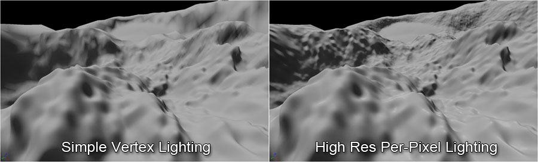

UDN
Search public documentation:
LandscapeKR
English Translation
日本語訳
中国翻译
Interested in the Unreal Engine?
Visit the Unreal Technology site.
Looking for jobs and company info?
Check out the Epic games site.
Questions about support via UDN?
Contact the UDN Staff
日本語訳
中国翻译
Interested in the Unreal Engine?
Visit the Unreal Technology site.
Looking for jobs and company info?
Check out the Epic games site.
Questions about support via UDN?
Contact the UDN Staff
UE3 홈 > 랜드스케이프 (Landscape)
랜드스케이프 (Landscape)

- 랜드스케이프 만들기 - 새 랜드스케이프 가져오기 및 구형 터레인 변환하기
- 랜드스케이프 머티리얼 - 랜드스케이프 터레인에 사용할 머티리얼 셋업하기
- 랜드스케이프 편집하기 - 랜드스케이프 하이트맵과 머티리얼 레이어 편집하기
- 모바일에서의 랜드스케이프 - 모바일 전용 랜드스케이프 정보입니다.
랜드스케이프 기능
 정적 렌더 데이터가 GPU 메모리에 텍스처로 저장
랜드스케이프 시스템은 터레인에 대한 렌더 데이터를 GPU 메모리에 텍스처로 저장하여, 버텍스 셰이더에서 데이터를 찾아볼 수 있도록 합니다. 데이터는 32비트 텍스처로 패킹되는데, 하이트맵이 R 과 G 채널을 16비트 형태로 차지하며, X 와 Y 오프셋은 8비트 값으로 B 와 A 채널에 각각 저장됩니다.
지속 지오-밉맵 LOD
랜드스케이프 터레인에 대한 LOD는 표준 텍스처 밉맵을 사용하여 처리합니다. 각 밉맵은 레벨 오브 디테일(LOD)이며, 샘플링할 밉맵은
정적 렌더 데이터가 GPU 메모리에 텍스처로 저장
랜드스케이프 시스템은 터레인에 대한 렌더 데이터를 GPU 메모리에 텍스처로 저장하여, 버텍스 셰이더에서 데이터를 찾아볼 수 있도록 합니다. 데이터는 32비트 텍스처로 패킹되는데, 하이트맵이 R 과 G 채널을 16비트 형태로 차지하며, X 와 Y 오프셋은 8비트 값으로 B 와 A 채널에 각각 저장됩니다.
지속 지오-밉맵 LOD
랜드스케이프 터레인에 대한 LOD는 표준 텍스처 밉맵을 사용하여 처리합니다. 각 밉맵은 레벨 오브 디테일(LOD)이며, 샘플링할 밉맵은 text2Dlod HLSL 인스트럭션(명령)을 사용하여 지정할 수 있습니다. 이 방법으로 두 밉 레벨 다 샘플링한 다음 하이트와 X Y 오프셋이 버텍스 셰이더에서 보간되어 깨끗한 모핑 효과를 낼 수 있기에, 다수의 LOD 와 부드러운 LOD 전환도 가능합니다.
 하이트맵과 웨이트맵 데이터 스트리밍
데이터가 텍스처에 저장되므로, 언리얼 엔진 3의 표준 텍스처 스트리밍 시스템을 활용하여 필요한 대로 밉맵을 스트림 인/아웃시킬 수 있습니다. 이는 하이트맵 데이터에만 적용될 뿐 아니라, 텍스처 레이어에 대한 웨이트에도 적용됩니다. 각 LOD에 필요한 밉맵만 요구하니 어느때고 사용되는 메모리의 양이 최소화되는 것이고, 그에 따라 만들 수 있는 터레인의 터레인의 크기도 커질 수 있는 것입니다.
고해상도 LOD-독립 라이팅
지형의 X Y 기울기가 저장되기에, (LOD 미적용) 전체 고해상도 노멀 데이터가 라이팅 계산에 활용됩니다.
하이트맵과 웨이트맵 데이터 스트리밍
데이터가 텍스처에 저장되므로, 언리얼 엔진 3의 표준 텍스처 스트리밍 시스템을 활용하여 필요한 대로 밉맵을 스트림 인/아웃시킬 수 있습니다. 이는 하이트맵 데이터에만 적용될 뿐 아니라, 텍스처 레이어에 대한 웨이트에도 적용됩니다. 각 LOD에 필요한 밉맵만 요구하니 어느때고 사용되는 메모리의 양이 최소화되는 것이고, 그에 따라 만들 수 있는 터레인의 터레인의 크기도 커질 수 있는 것입니다.
고해상도 LOD-독립 라이팅
지형의 X Y 기울기가 저장되기에, (LOD 미적용) 전체 고해상도 노멀 데이터가 라이팅 계산에 활용됩니다.
 이 방법으로 멀리 있어서 LOD 가 낮아진 컴포넌트에도 픽셀별 라이팅을 하는 데 항상 최고해상도 터레인을 사용할 수 있는 것입니다.
이 방법으로 멀리 있어서 LOD 가 낮아진 컴포넌트에도 픽셀별 라이팅을 하는 데 항상 최고해상도 터레인을 사용할 수 있는 것입니다.

이 고해상도 노멀 데이터를 디테일 노멀 맵과 결합하면, 랜드스케이프 터레인에 별다른 부하 없이 매우 디테일한 라이팅이 가능합니다. PhysX 콜리전
랜드스케이프는 언리얼과 리짓 바디 콜리전 둘 다에 대한 콜리전으로 PhysX 하이트필드 오브젝트를 사용합니다. 각 레이어에 피지컬 머티리얼을 지정할 수 있으며, 콜리전 시스템은 어떤 피지컬 머티리얼을 사용할지 결정하는 데 있어 각 위치에서의 도미넌트 레이어를 사용합니다. 해상도가 (렌더 해상도 절반 정도로) 감소된 콜리전 하이트필드를 사용하여 거대한 랜드스케이프 지형에 필요한 메모리를 절약할 수도 있습니다. 원거리 랜드스케이프에 대한 콜리전과 렌더 컴포넌트 역시도 레벨 스트리밍 시스템을 사용하여 스트림 아웃 시킬 수 있습니다.
PhysX 콜리전
랜드스케이프는 언리얼과 리짓 바디 콜리전 둘 다에 대한 콜리전으로 PhysX 하이트필드 오브젝트를 사용합니다. 각 레이어에 피지컬 머티리얼을 지정할 수 있으며, 콜리전 시스템은 어떤 피지컬 머티리얼을 사용할지 결정하는 데 있어 각 위치에서의 도미넌트 레이어를 사용합니다. 해상도가 (렌더 해상도 절반 정도로) 감소된 콜리전 하이트필드를 사용하여 거대한 랜드스케이프 지형에 필요한 메모리를 절약할 수도 있습니다. 원거리 랜드스케이프에 대한 콜리전과 렌더 컴포넌트 역시도 레벨 스트리밍 시스템을 사용하여 스트림 아웃 시킬 수 있습니다.